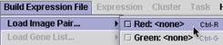

(3) Load Tiff Files (Control R and Control G)
| Under the Build Expression File menu, load the red and green tiff image pairs. Remember that red is a longer wavelength than green, so if your files are identified by the wavelengths, you should still be able to determine which color is which. |  |